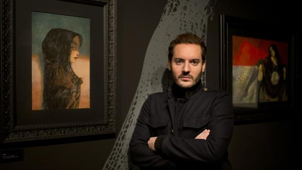

Benjamin Lacombe

Frida Kahlo

Bambi

Lobo y caperucita
BIOGRAFÍA DE BENJAMIN LACOMBE
Benjamín Lacombe es un ilustrador y autor francés nacido el 12 de julio de 1982 en París, donde actualmente vive y trabaja. Sus ilustraciones se destacan por un estilo caricaturesco que denotan elegancia, fragilidad y melancolía. En 2001 se unió a la Escuela Nacional de Artes Decorativas (ENSAD), en París, donde continuó su formación artística. Durante sus estudios, Benjamín trabajó en publicidad y animación y, con sólo 19 años, edita su primer cómic. Lo que en un principio fue su proyecto de fin de carrera, pasó a ser su primer libro para niños: Cereza Guinda, el álbum que él mismo escribió e ilustró fue publicado por Les ƒditions du Seui en marzo de 2006. Al año siguiente, Benjamín se convirtió en una joven celebridad del mundo editorial desde su exitoso lanzamiento en Estados Unidos por el sello Walker Books y gracias a la nominación de la prestigiosa Revista Time que ubicó a Cereza Guinda dentro de los 10 mejores libros para niños publicados en el año 2007. Desde entonces, escribió e ilustró muchos libros abordando temas tales como: la infancia, la melancolía y la diferencia. Para ello, ha utilizado técnicas variadas como el gouache, el lápiz y el grafito, las acuarelas y la pintura al óleo. A lo largo de su trayectoria, Benjamín ha trabajado con Albin Michel, Barefoot Books (EE.UU.), Edelvives (España), Hemingway Corea (Corea), Milán, MaxMilo, Cerbatana, Sol, Walker Books (EE.UU.) y Le Seuil Jeunesse, la editorial con la que publicó la mayoría de sus libros. Entre sus fuentes de inspiración se encuentran el movimiento Prerrafaelistas y el Quattrocento Italiano, primitivo flamenco, así como también artistas más contemporáneos: Tod Browning y su mundo "monstruos", Tim Burton, Fritz Lang y su película Metropolis, Ray Harryhausen, David LaChapelle o Diane Arbus. Su entorno personal y social, también son parte de su inspiración. Un ejemplo de ello, es su perro Virgil a quién procura incluir en la mayoría de sus obras. Si bien la mayoría de las producciones de Lacombe conciernen al sector juvenil, también publicó libros ilustrados para adultos incluyendo entre ellos una reversión de los " Cuentos Macabros " de Edgar Allan Poe, con la traducción de Baudelaire, como así también la historia de " Notre-Damede París " con texto íntegro de Victor Hugo. Otros artistas han trabajado a partir de obras originales de Benjamín Lacombe, como Julien Martinez, un escultor y creador de muñecas contemporáneas, o Emmanuelle Andrieu, de la Casa de la Vidriera, que realizó una vidriera a partir de una ilustración de " Cuentos Macabros ".